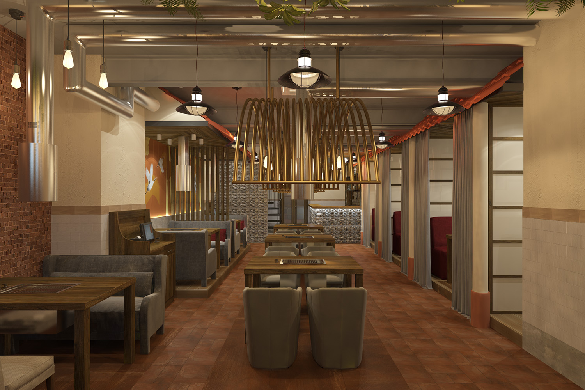

Ресторан "Ханган" открыл свои двери в 2020 году с целью познакомить гостей с настоящей корейской кухней.
Название нашего ресторана вдохновлено рекой Ханган, которая протекает через Сеул - сердце корейской культуры и кулинарии.
Наш шеф-повар Ким Чен Су обучался искусству корейской кухни в Сеуле и имеет более 15 лет опыта приготовления традиционных блюд.
Мы гордимся тем, что используем только свежие ингредиенты и соблюдаем все традиции корейской кулинарии.